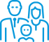
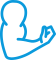
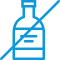

<div class="section9__radius radius__section">
	<section id="section9" class="section9">
		<div class="container">
			<h2 class="title">КАКУЮ ПРОГРАММУ ЛЕЧЕНИЯ МЫ ИСПОЛЬЗУЕМ?</h2>


			<div class="program">
				<div class="program__inner">
					<div class="program__title">Используем собственную методику с элементами немецкой программы
						<span>"Дейтоп"</span> и мировой программы <span>"12 шагов"</span></div>
					<div class="program__text">
						В совокупности - это комплексный подход в оказании помощи людям и их близким. Реабилитационная программа
						основана на био-психо-социо-духовной модели работы с химической зависимостью и содержит элементы немецкой
						программы «Дейтоп» и мировой программы «12 шагов». В ходе прохождения курса социальной адаптации человек
						приобретает навыки, необходимые для поддержания комфортной трезвости на протяжении всей жизни. Программа
						реализуется при участии клинических психологов, семейных терапевтов, врачей психиатров-наркологов,
						консультантов
						по химической зависимости. В рамках системного комплексного подхода квалифицированная помощь предоставляется
						не
						только самим людям, столкнувшимся с проблемой алкоголизма и наркомании, но и их родным и близким.
						Объединение
						всех этих ресурсов и позволяет достичь самых высоких показателей эффективности.
					</div>
				</div>
				<!-- /.program__inner -->

				<div class="program-rehabilitation">
					<div class="program-rehabilitation__title">Программы реабилитации: <span>"Полный курс, от 3-х месяцев (от 1150
							руб./сутки)"</span></div>
					<div class="content__items">

						<div class="content__item">
							<div class="content__img">
								
							</div>
							<div class="content__text">Выстраиваются здоровые отношения в семье</div>
						</div>
						<!-- /.content__item -->

						<div class="content__item">
							<div class="content__img">
								
							</div>
							<div class="content__text">Восстанавливается физическое состояние</div>
						</div>
						<!-- /.content__item -->

						<div class="content__item">
							<div class="content__img">
								
							</div>
							<div class="content__text">Полностью пропадает тяга к наркотикам и алкоголю</div>
						</div>
						<!-- /.content__item -->

						<div class="content__item">
							<div class="content__img">
								
							</div>
							<div class="content__text">Пациент приобретает все необходимые навыки для новой счастливой жизни</div>
						</div>
						<!-- /.content__item -->

						<div class="content__item">
							<div class="content__img">
								
							</div>
							<div class="content__text">Помогаем с трудоустроством после реабилитации</div>
						</div>
						<!-- /.content__item -->

					</div>
				</div>
				<!-- /.program-rehabilitation -->

			</div>
			<!-- /.program -->


		</div>
		<!-- /.container -->
	</section>
	<!-- /.section9 -->
</div>
<!-- /.section9__radius -->